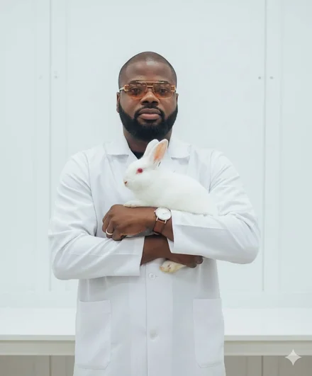
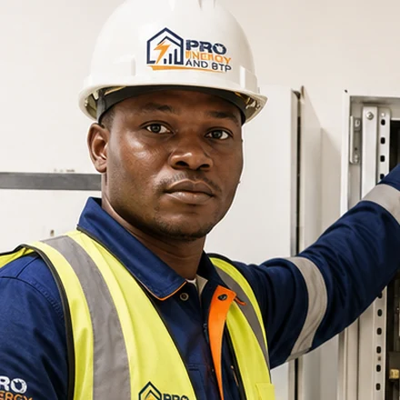

Développement, design et marketing digital — classés par domaine de compétence.
Chargement des projets…
Témoignages
Avis de mes clients

"
DG — Lynares Agro
★★★★★
Denis Tossou a su transformer la vision de Lynares Agro en une identité visuelle moderne, professionnelle et cohérente. J'ai particulièrement apprécié sa créativité, son écoute et son sens du détail. Un designer talentueux et engagé que je recommande vivement.
Baudoin Amoussou
DG, Lynares Agro
01
"
DG — JT Service
★★★★★
Denis Tossou a parfaitement compris l'identité et les ambitions de JT Service. Il a réalisé notre branding et nous accompagne également dans la création et l'animation de notre page Facebook. Son professionnalisme, sa créativité et sa disponibilité font de lui un designer que je recommande vivement.
Joseph Tossou
DG, JT Service
02

"
DGA — Pro Energy and BTP
★★★★★
Denis Tossou a su traduire la vision de Pro Energy and BTP en une identité visuelle professionnelle, moderne et cohérente. J'ai apprécié son écoute, sa créativité et son souci du détail. Je recommande vivement son expertise à toute entreprise souhaitant renforcer son image de marque.
Simon Pierre
DGA, Pro Energy and BTP
03
Collaborations
Ils me font confiance
CDC Bénin
Edushop
Nerdx Academy
Ets MEMEB
JT Service
Farhane and Company
Pro Energy and BTP
Don de Dieu
Lynares Agro
Be The Best
Wopas
Best Bénin
Intervention chez CDC Bénin en tant que développeur SPFx, mentionnée sans détail par souci de confidentialité.